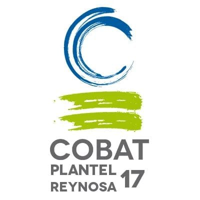

>CUIDADO DEL MEDIO AMBIENTE EN EL COBAT

El medio ambiente es el espacio en el que se desarrolla la vida de los organismos y que permite su interacción. Está conformado por seres vivos (factores bióticos), por elementos sin vida (factores abióticos) y por elementos artificiales creados por el hombre. Cuando se habla de factores bióticos se hace referencia a todos los seres vivos que viven en un ambiente (las bacterias microscópicas, los hongos, la flora, la fauna, los seres humanos) y las interacciones entre ellos; por su parte, los factores abióticos son aquellos que carecen de vida pero determinan el espacio físico del ambiente (como el aire, el suelo y el agua) y resultan esenciales para la subsistencia de los organismos vivos. Entre los elementos artificiales se incluye a todos aquellos creados por el ser humano, como la urbanización, la cultura, las tradiciones. La suma de estos valores naturales, culturales y sociales en un momento histórico y en un lugar en particular constituyen el medio ambiente.
El factor clave para la vida
Cualquier organismo obtiene del medioambiente el sustento necesario para garantizar su supervivencia, no solo alimento, sino, también, refugio, aire o energía. Por eso, mantener su equilibrio resulta fundamental para asegurar la vida tal y como se conoce hoy en día. En el caso de los seres humanos, precisamos del consumo de gran cantidad de recursos naturales para comer, vestirnos o, incluso, para fabricar herramientas y otros productos que luego utilizamos en nuestras actividades diarias. Cuidar el ecosistema para hacer sostenible el uso de estos recursos y evitar su desaparición no es, por lo tanto, una filosofía simplemente bondadosa en relación con el planeta en el que vivimos, sino que nos va nuestra propia vida en ello.

Importancia del medio ambiente
Todos los organismos obtienen del medio ambiente todos los elementos que necesitan para vivir: desde el aire y el agua, hasta el refugio y el alimento que les permite crecer, desarrollarse y obtener energía. Mantener el equilibrio del medio ambiente es fundamental para mantener la vida en la Tierra tal como la conocemos. Además, los seres humanos utilizan una gran cantidad de recursos naturales del medio para cubrir sus necesidades como vestimenta, alimento y objetos de uso cotidiano entre otros ejemplos. Por eso el ser humano debe conocer y cuidar sus interacciones con el medio ambiente para gestionar de manera sostenible los recursos naturales que permiten su crecimiento económico y su desarrollo. La fauna y la flora son de vital importancia para el medio ambiente ya que poseen una interdependencia que posibilita el equilibrio de las especies y el desarrollo de la biodiversidad. La supervivencia del hombre depende en gran medida de las interacciones y el uso consciente de la flora, la fauna y los recursos naturales, así como del desarrollo de las relaciones sociales, políticas y económicas que forman parte de su medio. Cuando el ser humano cuida los factores abióticos (por ejemplo, los ríos de una región) y los factores bióticos (como los árboles de un bosque) mantiene y preserva el futuro de su especie, el futuro del resto de los organismos y el de las generaciones futuras.

Cuidado del medio ambiente en la escuela
- Cultivar un huerto hurbano
- Utilizar material escolar ecologico
- Proponer concursos de reciclaje
- Reutilizar atravez de las manualidades
Composta
La composta es el proceso de la descomposición de Los desperdicios orgánicos en el cual, la materia vegetal y animal se transforman en abono. Es todo aquel material que se pudre, como la hojarasca, desperdicios de comida, estiércol, plumas, yerba o pasto, etc. También podemos decir que es la oxidación controlada de distintos materiales orgánicos. La composta nos sirve para cuando queremos sembrar plantas, le da nutrientes a las plantas y les ayuda a crecer mejor y mas rapido ya que son nutrientes del medio ambiente y se complementa muy bien con la tierra que tambien contiene.

Hortaliza
Las hortalizas son un conjunto de plantas cultivadas generalmente en huertos o regadíos, que se consumen como alimento, ya sea de forma cruda o preparadas culinariamente, y que incluye las verduras y las legumbres (las habas, los guisantes, etc.). Las hortalizas no incluyen las frutas ni los cereales. Sin embargo, esta distinción es arbitraria y no se basa en ningún fundamento botánico. La Real Academia Española no reconoce esta taxonomía, y circunscribe esta acepción a los cultivos realizados en un huerto.

Volver al inicio